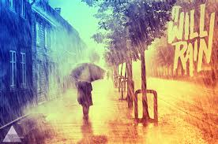
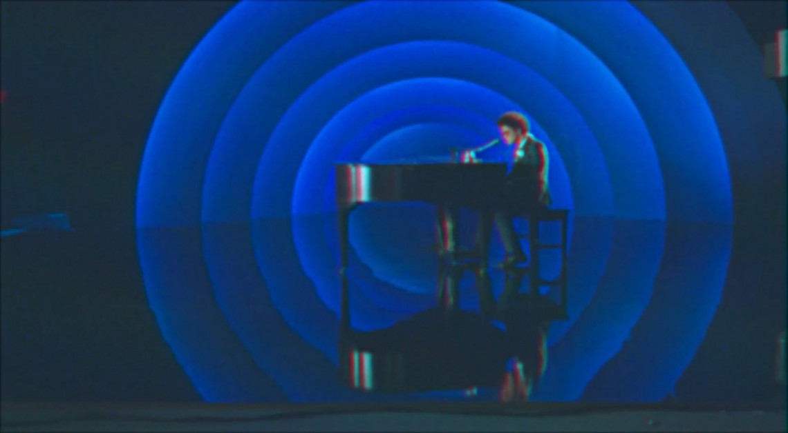

Vietnamese-German University
Foundation Year
English for Computer Science
Oh, her eyes, her eyes make the stars look like they're not shinin'
Her hair, her hair falls perfectly without her tryin'
She's so beautiful
And I tell her everyday
Yeah, I know, I know when I compliment her, she won't believe me
And it's so, it's so sad to think that she don't see what I see
But every time she asks me do I look okay?
I say
When I see your face
There's not a thing that I would change
'Cause you're amazing
Just the way you are
And when you smile
The whole world stops and stares for awhile
'Cause girl, you're amazing
Just the way you are
Her lips, her lips, I could kiss them all day if she'd let me
Her laugh her laugh, she hates but I think it's so sexy
She's so beautiful
And I tell her everyday
Oh, you know, you know, you know I'd never ask you to change
If perfect's what you're searching for, then just stay the same
So don't even bother asking if you look okay
You know I'll say
When I see your face
There's not a thing that I would change
'Cause you're amazing
Just the way you are
And when you smile
The whole world stops and stares for awhile
'Cause girl, you're amazing
Just the way you are
The way you are
The way you are
Girl, you're amazing
Just the way you are
When I see your face
There's not a thing that I would change
'Cause you're amazing
Just the way you are
And when you smile
The whole world stops and stares for awhile
'Cause girl, you're amazing
Just the way you are, yeah

If you ever leave me, baby,
Leave some morphine at my door
Cause it would take a whole lot of medication
To realize what we used to have,
We don't have it anymore.
There's no religion that could save me
No matter how long my knees are on the floor, oh
So keep in mind all the sacrifices i'm making
To keep you by my side
And keep you from walking out the door.
Cause there'll be no sunlight
If I lose you, baby
There'll be no clear skies
If I lose you, baby
Just like the clouds pass,
I will do the same
if you walk away
Everyday, it will rain,
I'll never be your mother's favorite
Your daddy can't even look me in the eye
Oooh if I was in their shoes,Ii'd be doing the same thing
Saying there goes my little girl
Walking with that troublesome guy.
But they're just afraid of something they can't understand
Oooh well little darling watch me change their minds
Yeah for you I'll try, I'll try, I'll try, I'll try
I'll pick up these broken pieces 'til I'm bleeding
If that'll make it right.
Ooooh don't just say
Goodbye, don't just say, goodbye
I'll pick up these broken pieces 'til I'm bleeding
If that'll make it right.
Cause there'll be no sunlight
If I lose you, baby
There'll be no clear skies
If I lose you, baby
Just like the clouds pass,
I will do the same
if you walk away
Everyday, it will rain,
Rain, rain.

Verse 1 :
Same bed, but it feels just a little bit bigger now
Our song on the radio, but it don't sound the same
When our friends talk about you all that it does is just tear me down
Cause my heart breaks a little when I hear your name
And it all just sound like uh, uh, uh
Chorus :
Hmmm too young, too dumb to realize
That I should have bought you flowers and held your hand
Should have gave you all my hours when I had the chance
Take you to every party cause all you wanted to do was dance
Now my baby is dancing, but she's dancing with another man.
Verse 2 :
My pride, my ego, my needs and my selfish ways
Caused a good strong woman like you to walk out my life
Now I never, never get to clean up the mess I made
And it hunts me every time I close my eyes
It all just sounds like uh, uh, uh, uh
Coda :
Although it hurts I'll be the first to say that I was wrong
Oh, I know I'm probably much too late
To try and apologize for my mistakes
But I just want you to know
I hope he buys you flowers, I hope he holds your hands
Give you all his hours when he has the chance
Take you to every party cause I remember how much you loved to dance
Do all the things I should have done when I was your man!
Do all the things I should have done when I was your man!